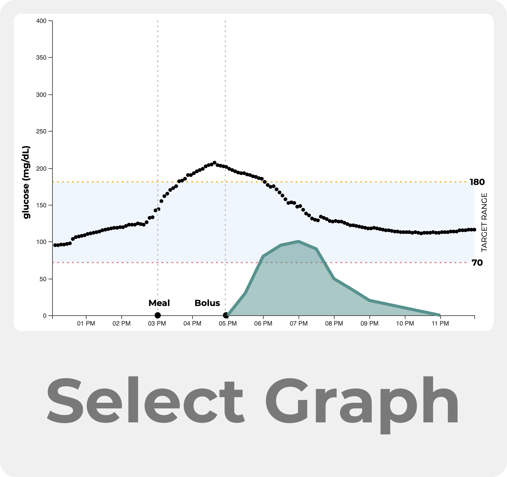

Insulin Timing
Choose a starting graph
Scenario: You pre-bolused for your meal, but recieved
an important call before you started eating. You ended up eating an hour after you pre-bolused.">
Scenario: You set a reminder to pre-bolus, but the
alarm did not go off on time. You bolused later after the meal.">
Time In Range: 95%
Bolus
Time (hr): 4:00 PM
60 min before meal